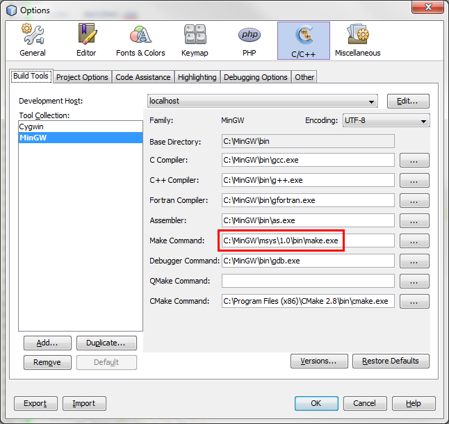
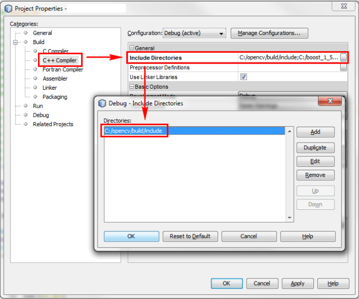
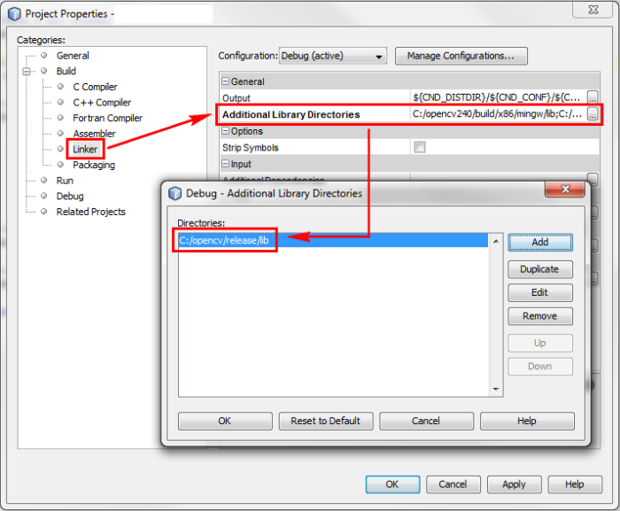
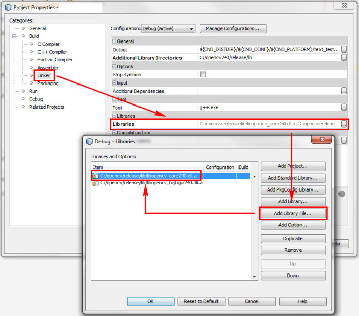
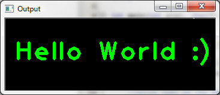

When I first started using OpenCV, I encountered two major difficulties:
I read many tutorials and "how-to" articles, but none was really comprehensive and thorough. Eventually I succeeded in setting up the environment; and after a while of using this (great) library, I decided to write this small tutorial, which will hopefully help others.
The are three parts to this tutorial:
The environment I use is: Windows 7, OpenCV 2.4.0, Netbeans 7 and MinGW 3.20 (with compiler gcc 4.6.2).
Assumptions: You already have MinGW and Netbeans installed on your system.
When downloading OpenCV, the archive actually already contains pre-built binaries (compiled libraries and DLL's) in the 'build' folder. At first, I tried using those binaries, assuming somebody had already done the job of compiling for me. That didn't work.
Eventually I figured I have to compile the entire library on my own system in order for it to work properly.
Luckily, the compilation process is rather easy, thanks to CMake. CMake (stands for Cross-platform Make) is a tool which generates makefiles specific to your compiler and platform. We will use CMake in order to configure our building and compilation settings, generate a 'makefile', and then compile the library.
The steps are:
c:/opencv/.c:/opencv/.c:/opencv/release.c:/opencv/release/.mingw32-make and press enter. This should start the compilation
process.C:/opencv/release/bin
to the system PATH. This will make sure our programs can find the
needed DLL's to run.Netbeans should be told where to find the header files and the compiled libraries (which were created in the previous section).
The header files are needed for two reasons: for compilation and for code completion. The compiled libraries are needed for the linking stage.
Note: In order for debugging to work, the OpenCV DLL's should be available, which is why we added the directory which contains them to the system PATH (previous section, step 5.4).
First, you should verify that Netbeans is configured correctly to work with
MinGW. Please see the screenshot below and verify your settings are correct
(considering paths changes according to your own installation). Also note
that the make command should be from msys and not from Cygwin.

Next, for each new project you create in Netbeans, you should define the include path (the directory which contains the header files), the libraries path and the specific libraries you intend to use. Right-click the project name in the 'projects' pane, and choose 'properties'. Add the include path (modify the path according to your own installation):

Add the libraries path:

Add the specific libraries you intend to use. These libraries will be
dynamically linked to your program in the linking stage. Usually you will need
the core library plus any other libraries according to the specific needs of
your program.

That's it, you are now ready to use OpenCV!
Here are the general steps you need to complete in order to install OpenCV and use it with Netbeans:
Here is a small example program which draws the text "Hello World : )" on a GUI window. You can use it to check that your installation works correctly. After compiling and running the program, you should see the following window:

#!c++
#include "opencv2/opencv.hpp"
#include "opencv2/highgui/highgui.hpp"
using namespace cv;
int main(int argc, char** argv) {
//create a gui window:
namedWindow("Output",1);
//initialize a 120X350 matrix of black pixels:
Mat output = Mat::zeros( 120, 350, CV_8UC3 );
//write text on the matrix:
putText(output,
"Hello World :)",
cvPoint(15,70),
FONT_HERSHEY_PLAIN,
3,
cvScalar(0,255,0),
4);
//display the image:
imshow("Output", output);
//wait for the user to press any key:
waitKey(0);
return 0;
}